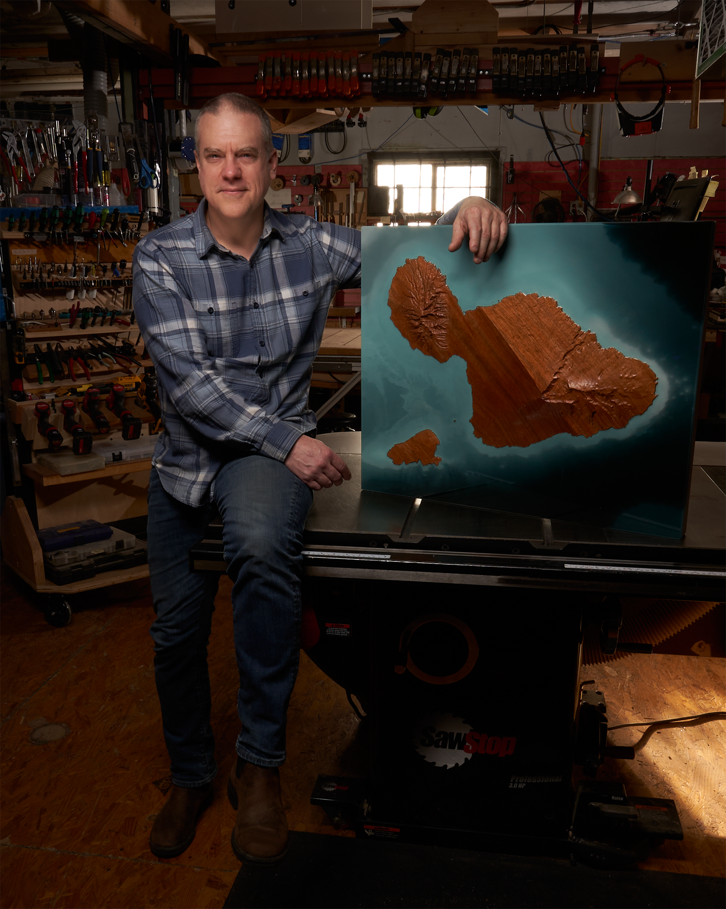
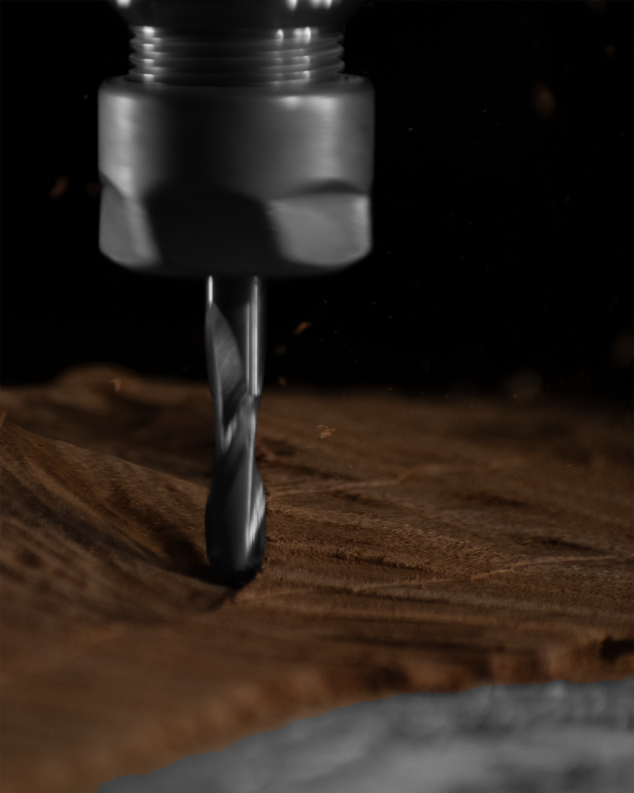
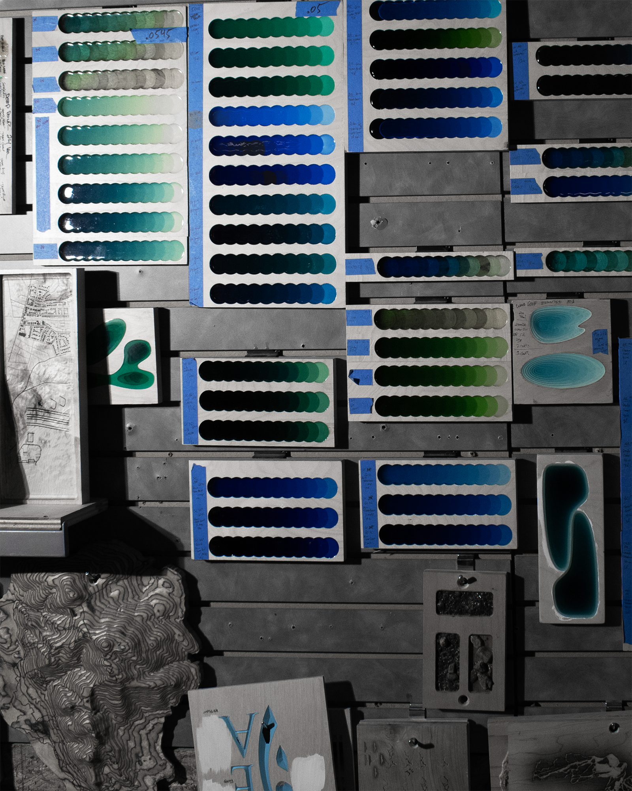

Place as Identity
Geography isn’t just scenery—it’s where memory lives. The landscapes that shape us deserve to be held as art, never reduced to souvenirs or screens.
Where geography, story, and craft converge.

Bonas Studio creates sculptural relief work exploring the relationship between identity and place. We are shaped by the landscapes we return to, the routes we know by feel, the weather, textures, distances, and terrain that quietly pattern a life. Over time, places become part of who we are.
The work translates real geography into three-dimensional form—pairing digital precision with tactile craft to create pieces that are both materially refined and deeply personal. The aim is not documentation, but transformation: giving lasting form to a place and the story attached to it.
Each piece is made to be lived with, held onto, and passed on—functioning as art, as keepsake, and as a vessel for memory and identity. A portrait of land, and of the bond between people and the places that shape them.
Geography isn’t just scenery—it’s where memory lives. The landscapes that shape us deserve to be held as art, never reduced to souvenirs or screens.
Every piece is made individually for one client, from one place. You're working with someone who cares as much about the geography you bring as the craft required to honor it. The relationship is personal and deliberate.
The work begins with scientific precision—real elevation data, accurate contours—and is finished by hand. Precision carving preserves fidelity; wood selection, resin color, and finishing bring warmth and presence.
These pieces are built to outlast trends, withstand moves, and hold meaning for decades. Premium materials and time-tested joinery ensure structural stability and longevity. This is craft made with permanence in mind.

Precision carving translates data into relief.

Every piece of wood is selected for grain and character.

Resin poured in custom tones for water features.

Hand-finished—no two pieces alike.
I source domestic hardwoods from certified sustainable forestry operations and architectural reclamation yards. Every piece of walnut, cherry, or maple has a story before it becomes yours.
From initial consultation to final delivery, the process remains transparent. Materials, milestones, and key decisions are communicated clearly—whether the commission is collaborative or artist-led. You're informed throughout.
I keep production intentionally limited to protect quality. Each year, I accept only as many commissions as I can craft with full attention—start to finish. Quality over quantity, always.
Every piece includes care guidance and my direct contact. If the work is ever damaged—whether from transit, impact, or environmental factors—I'm available to assess and restore it when possible. These are built to endure.
Interested in commissioning a work or learning more about the studio?
Start the conversation